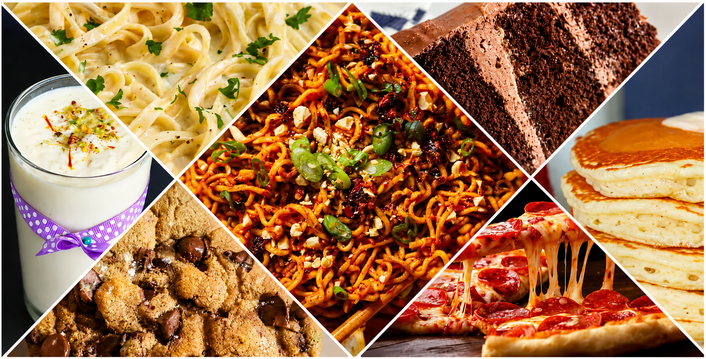

Food connects people across cultures. This website brings together recipes inspired by different parts of the world from Italian pizza to classic desserts. Whether you're a beginner or an experienced cook, you'll find easy-to-follow recipes here.
Welcome to Recipe Journal, a small collection of recipes inspired by flavors from around the world. From comforting Italian pasta to warm Japanese ramen and delicious desserts, each dish celebrates a different culture and its unique traditions. Whether you're simply browsing or looking for inspiration, there's something here for every food lover.
Thank you for visiting Recipe Journal. May every recipe bring warmth, comfort, and delicious memories to your table.
Contact: LinkedIn | E-mail
© 2026 Recipe Journal | Made with ❤️